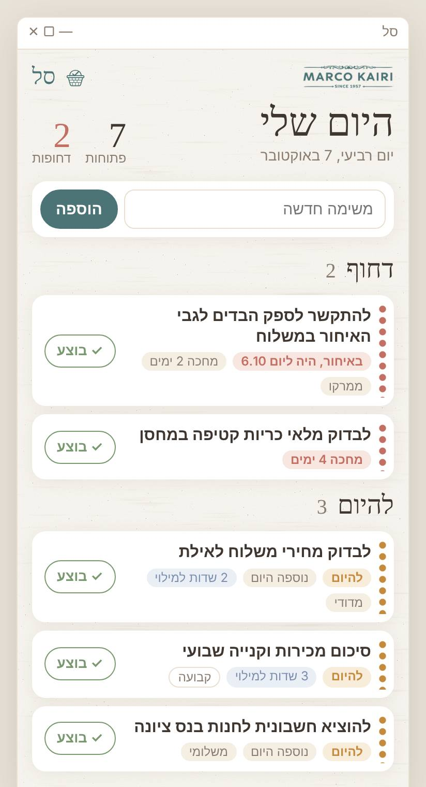
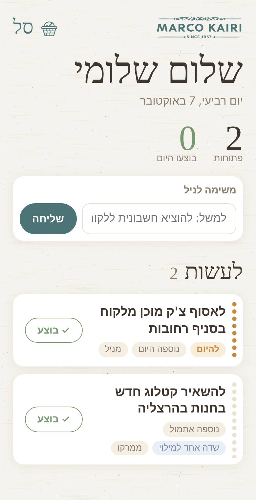
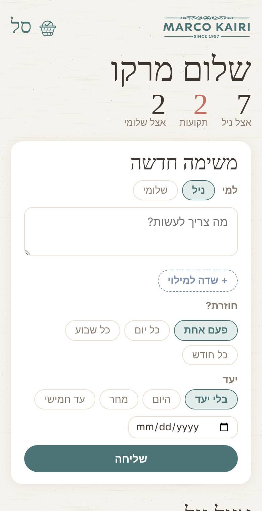

סל
המקום שבו כל המשימות של המשרד נאספות, נעשות ונסגרות.
כשמישהו אומר "שמתי לך בסל", זה אומר שמחכה לך משימה. פותחים, עושים, לוחצים ✓ בוצע.
איך זה עובד
- משימה נכנסת לסל: ממרקו, מדודי, מניל, משלומי, או לבד כשזו משימה קבועה (למשל כל חמישי).
- היא מופיעה מיד אצל מי שצריך לעשות אותה, עם יעד ושם השולח.
- עושים אותה ולוחצים ✓ בוצע. בחלק מהמשימות יש שדות קצרים למלא קודם, למשל סכום או שם ספק.
- מרקו ודודי רואים מה נסגר ומה מחכה, בלי לשאול.
דחוף: באיחור או מחכה 3 ימים
להיום
בוצע
מי רואה מה

ניל
במחשב במשרד
- סל פתוח כל הזמן בצד המסך ועולה לבד כשהמחשב נדלק.
- משימה חדשה מקבלת הודעה קטנה וצבע לרגע.
- אחרי הישיבה של הבוקר מוסיפים כאן את המשימות מהמחברת.
- אפשר לשלוח משימה לשלומי.

שלומי
בטלפון ובטאבלט
- רק המשימות שלו, למשל "לאסוף צ׳ק מוכן בסניף רחובות".
- לוחצים ✓ בוצע מהשטח, והמשרד רואה מיד.
- אפשר לשלוח משימה לניל, למשל להוציא חשבונית ללקוח.
- אותו קישור עובד בטלפון ובטאבלט.

מרקו ודודי
בטלפון
- שולחים משימות לניל או לשלומי, עם יעד ושדות למילוי.
- מגדירים משימות קבועות: כל יום, כל שבוע או כל חודש.
- רואים מה פתוח, מה תקוע ומה בוצע, כולל מה שמולא.
להוסיף למסך הבית
אייפון
- פותחים את הקישור האישי ב-Safari.
- כפתור השיתוף (ריבוע עם חץ).
- "הוסף למסך הבית" ← "הוסף".
אנדרואיד
- פותחים את הקישור האישי ב-Chrome.
- ⋮ בפינה למעלה.
- "הוספה למסך הבית" ← "הוספה".
מופיע האייקון של סל, ומשם נכנסים כמו לאפליקציה. בטאבלט של שלומי עושים את אותו הדבר עם אותו קישור.